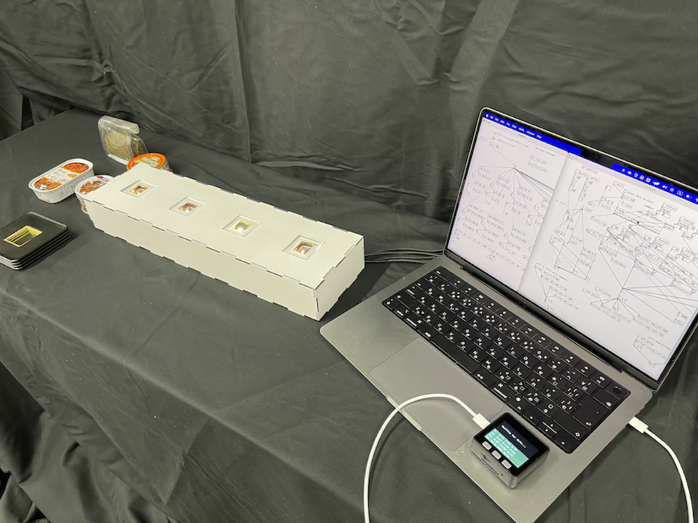
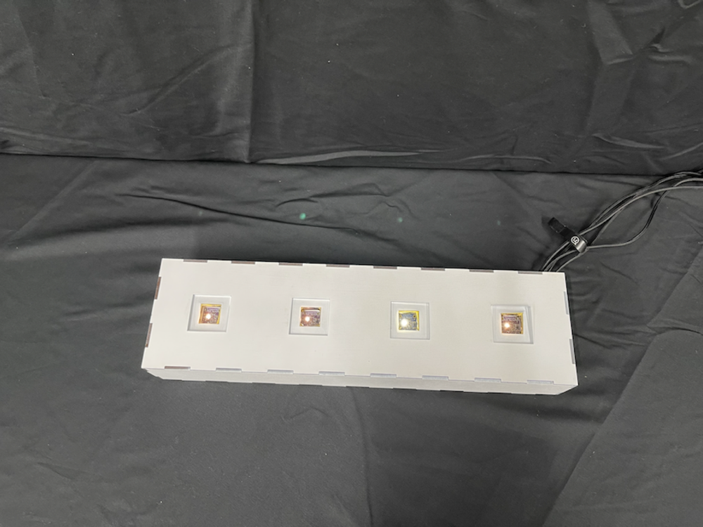
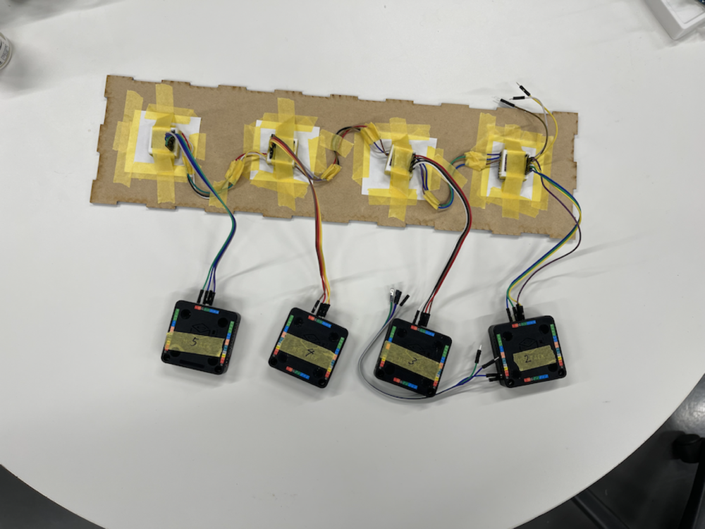
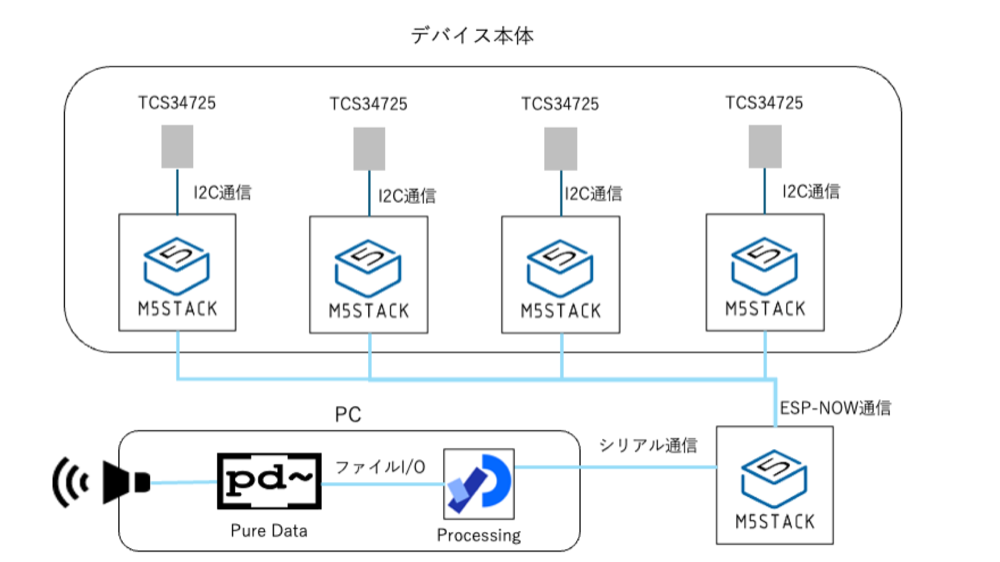

Mealody Plate

Open on YouTubeTechnology
- M5stack Basic
- Color Sensor
- ESP-BOW
- Pure Data
Mealody Plate is an interactive device that generates music through a meal, based on the idea that connecting food and music could create a new kind of experience.
The device uses four color sensors, each responding to a plate of food. The sensors read RGB color values, and four M5Stack devices send those values to a receiving M5Stack. The data is then passed through Processing to Pure Data and used to generate sound.
Each color sensor is assigned a different timbre, such as metallic sounds or hi-hat-like sounds. The colors from the four sensors are also converted into frequencies and output as chords, so placing multiple dishes creates a richer musical composition.
When visitors eat the food, the sound associated with that plate disappears, gradually reducing the music. The fully arranged table is presented as a completed piece of music, and eating becomes an act of consuming sound.
Because each dish produces different color information, the resulting music changes every time. This creates a one-time musical experience in which the act of eating also transforms the sound.


